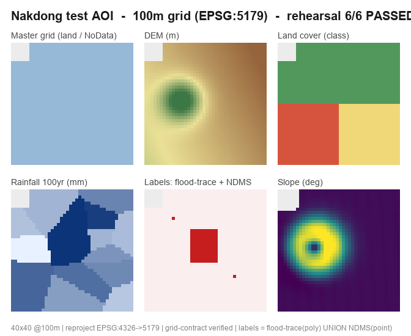

Flood Risk Harness · Operations
격자(100m) 전국 홍수위험도 평가·예측 하네스
이종 원시자료를 전국 100m 표준격자망(EPSG:5179, 수자원단위 대권역/중권역)에 표준화하고, 지형·수문·노출·취약성 인자를 통합해 머신러닝(RF·XGBoost·LightGBM·CatBoost·DecisionTree)으로 격자별 홍수위험도를 산출하는 에이전트 하네스의 구성·상태를 한눈에 관리합니다.
리허설 검증
6/6
통과율 100%
에이전트
8
전문가 팀 · all opus
스킬
9
+ 오케스트레이터
ML 모델
5
트리 기반 비교
재현주기
3
50 · 100 · 200년
파이프라인
7
단계 + 증분 QA
구성 분석
원형(도넛) 차트 · Chart.js · 값은 프로젝트 파일에서 추출리허설 검증 결과
낙동강 축소 AOI · 실제 코드(flood_risk311) 검증
하네스 자산 구성
.claude/ 정의 파일 23개
ML 모델 포트폴리오
침수흔적도 ∪ NDMS 라벨로 학습·비교
자료 준비 현황
data/ 드롭존 8종 · 원시자료 투입 대기
처리 파이프라인
flood-risk-orchestrator가 Phase별 팀을 재구성01
원시자료 표준화
02
지형 재해인자
03
수문 재해인자
04
노출·취약성 인자
05
ML 위험지수
06
재현주기 예측
07
위험지도·리포트
에이전트 팀
전문가 8 · 모델 opus · 활성 팀 ≤ 5▦
데이터 엔지니어
geo-data-engineer
이종 원시자료·라벨을 100m 표준격자망에 정합·표준화하고 대권역/중권역으로 파티셔닝하는 초석 에이전트.
표준화opus
⛰
지형 재해 분석
terrain-hazard-analyst
DEM에서 경사·저지대·TWI·HAND·곡률·흐름누적 등 지형 소인을 산출. 흐름 기반 인자는 완전유역에서 처리.
지형opus
☔
수문 재해 분석
hydro-hazard-analyst
재현주기별 확률강우량, 유출곡선지수(CN), 하천 근접·차수·범람, 배수능력을 격자화하는 수문 전문가.
수문opus
🏙
노출·취약성 분석
exposure-vulnerability-analyst
인구·자산·취약계층을 다이어시메트릭으로 격자 분배하고 건물·불투수·방재인프라를 인자화.
노출opus
◆
위험지수 모델러
flood-risk-modeler
인자를 통합해 RF·XGB·LGBM·CatBoost·DT를 침수이력 라벨로 학습·비교. 중권역 공간 CV로 정직하게 검증.
모델링opus
🌀
시나리오 예측
scenario-forecaster
학습 모델을 재사용해 50/100/200년 빈도 확률강우 시나리오별 미래 위험도와 위험 증분을 예측.
예측opus
🗺
지도 제작
geo-cartographer
위험지수를 Jenks/분위로 등급화해 위험지도·COG·웹타일·노출 교차 통계·방재 리포트로 변환.
지도opus
✓
검증 검사관
validation-inspector
격자 계약을 강제 검증하고 라벨 대비 성능·공간 과적합·라벨 누수를 점검하는 QA. 각 산출 직후 증분 검증.
QAopus
표준격자 계약
config/grid_config.yaml · 모든 산출물의 단일 기준좌표계 (CRS)
EPSG:5179
Korea 2000 / UTM-K, GRS80
해상도
100 m
100×100 정사각 격자
NoData
−9999
결측 ≠ 0 · 명시적 값
원점 정렬
snap ✓
국가 표준격자 원점 snap
파티션
대권역 → 중권역
처리=대권역 · 모델=중권역
파일 포맷
COG
인자당 단일밴드 · 표=GeoParquet
격자 ID
sw_corner
SW 모서리 좌표 인코딩(join 키)
교차검증
spatial_block
중권역 블록 CV · 무작위 k-fold 금지
리허설 결과 — 낙동강 테스트 AOI
4km×4km · 합성 데이터 · 실제 파이프라인 코드
40×40 @100m · 재투영 EPSG:4326→5179 · 격자 계약 검증 · 라벨 = 침수흔적도(poly) ∪ NDMS(point)
검증 항목6 / 6 PASS
✓
DEM 표준화
연속 래스터 · 4326→5179 재투영 · bilinear
✓
토지피복 표준화
범주형 폴리곤 · nearest 래스터화
✓
강우 표준화
관측 포인트 → 최근접 격자화(연속장)
✓
라벨 격자화
침수흔적도 폴리곤 ∪ NDMS 포인트
✓
의도적 불일치 차단
원점 50m 밀림 → 계약 위반 검출 성공
✓
지형 인자(경사) 산출
표준화 DEM → slope
자료 드롭존 현황
data/ 하위 · 자료를 넣으면 하네스가 표준화raw/point/강우관측소 · NDMS 피해 · 건물 · 시설대기
raw/polygon/토지피복 · 침수흔적도 · 행정경계 · 지질대기
raw/raster/DEM · 레이더강수 · 토양 (상이 해상도/CRS)대기
raw/tabular/행정구역 단위 인구·자산·취약계층 집계대기
raw/timeseries/강우·수위 관측 시계열대기
standard_grid/기제작 마스터 격자 / 사전격자 자료(제공 시)대기
labels/타깃: 침수흔적도 · NDMS (원시 또는 격자)대기
watershed/수자원단위지도(대권역/중권역/표준유역)대기
_workspace/리허설 산출물(마스터격자·DEM·라벨·경사 등)검증 완료